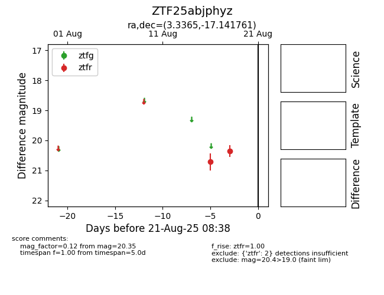

Target ZTF25abjphyz at 2025-08-21 08:38, see:
FINK: fink-portal.org/ZTF25abjphyz
Lasair: lasair-ztf.lsst.ac.uk/objects/ZTF25abjphyz
ALeRCE: alerce.online/object/ZTF25abjphyz
alt names
ZTF25abjphyz (ztf,alerce)
coordinates:
equatorial (ra, dec) = (3.3365,-17.14176)
galactic (l, b) = (79.5714,-76.68752)
photometry
last ztfr=20.35
2 ztfr detections
